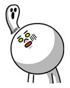

| ９０％以上の女性が好きな男性の特徴 | |
| Mizuki | |
| (2019) | |
９０％以上の女性が
好きな男性の特徴
目次
恋愛アドバイザーのMizukiと申します。
年齢：４２歳
２人の子供を持つ４人家族のパパです。
今回は女性が求める男性像についてお伝えして行きます。
今でこそ恋愛アドバイザーとしていくつか本を出版させて頂いていますが、数年前までの私は彼女もいたわけでもなく、生まれてからそれまでの２７年間までは、一度も彼女が出来たことはありませんでした。
ではいったいなぜ？彼女を作ることができ、今では結婚もし、２人の子供を育てながら幸せな生活ができるようになったのか。
そして女性が求める男性像についてお伝えして行きます。
この先読み進めて頂くことによって、あなたがこれまでに彼女が出来なかった理由、そしてどんな男性が女性から求められているのかについて知ることが出来ます。
この本を読み終えるころには女性に対する見方も変わり、あなたも私と同じように彼女ができ、幸せな生活ができるようになって行くでしょう。
想像してみてください。
あなたが毎日理想の彼女から必要とされ、毎日楽しい日々を過ごしながら生活する未来を・・・
・好きな時にランチやディナーに出かけるのもよいでしょう
・あなたの趣味に付き合ってもらうのもよいでしょう
・観たかった映画に彼女を連れて行くのもよいでしょう
・あなたの行きたかった店に彼女を連れて行くのもよいでしょう
・カラオケが好きならあなたの十八番を聞かせるのもよいでしょう
・おしゃれなバーに彼女を連れて行くのもよいでしょう
・あなたの自宅で彼女と一緒にゲームをするのもよいでしょう
・彼女の家で手料理を振る舞ってもらうのもよいでしょう
・あなたが落ち込んでいる時に慰めてもらうのもよいでしょう
・たまに耳かきをしてもうのもよいでしょう
その他にもあなたのやりたかったことは多々あると思います。
これらのことが手に入るようになって行きますので、最後まで読み進めていってください。
あなたが私と同じ男性であるならば、家族や友人など親しい間柄でも日々使っている言葉は人により違うと思います。
言葉の使いに関しても、親に対する話し方、友人に対しての話し方、他人に対しての話し方とさまざまです。
男性に比べ女性というのは、その人が使っている「言葉」によって印象や見方が違うということです。
男性の場合ですと、言葉よりも行動だったり、結果に対してその人の価値を判断する傾向が強いです。
ですが女性の場合、行動や結果がどうこうということではなく、あなたが女性に対して使う言葉を一番重要視しています。
根本的に男性脳と女性脳は違っており、男性脳は現実の見た目の部分を重要視することが多く、女性脳は自分の気分を良くさせてくれるものを重要視していることが多いんです。
今まで生きてきた人生経験にもよりますが、男性よりも女性の方が言葉を大切にする傾向が強いんです。
ですので、あなたが軽くその場しのぎの言葉を使い心にもない言葉を発言したりすると、女性はその言葉をいつまでも覚えていますので注意する必要があるということです。
あなたの周りにもこんな女性はいませんでしょうか？
何年も前に言われた言葉を今になっても覚えている人です・・・
ここで具体的にどのような言葉が女性にとって影響力があるのかをお伝えしていこうと思います。
女性同士で話す内容と、男性に対して話す言葉の内容はもちろん違いますが、それは男性も同じことですよね。
先ほども軽くお伝えしましたが、女性にとってその言葉が自分の気分を良くするものなのか？そうではないものか？それによって男性に対する印象がまったく異なるということです。
ではいったいどんな言葉を使えば良いのでしょうか？
あなたの気になる女性が職場だったり、何かのコミュニティだったり人それぞれだと思いますが、日頃から関わっている方の場合ですと、業務的なお願いだったり頼まれ事が多いと思います。
何かのコミュニティの場合ですと、イベントだったり、やることだったり、何か共通の事項に対してそれをキッカケに話しをすると思います。
はじめは誰でも挨拶からスタートしますが、あなたは普段きちんと挨拶はしていますでしょうか？
この挨拶が会話のスタートにしやすい事でもありますが、中には挨拶すらしない人もいますよね。
以前の私のように人見知りする人も多いと思いますが、職場やコミュニティなどでは挨拶くらいはしていますよね？
今「ドキッ！」と思われた方、これからでも遅くはないのでするようにしてみてください。
この挨拶は、女性と会話する上でもとても重要な要素になります。
女性にモテない原因の１つとして、挨拶すらしないという人が多いと言われています。
この挨拶は女性にとっては自分を認識していない、認めてもらえていない、嫌われていると捉えられてしまいます。
ですので、あなたの意中の女性に対して最低限挨拶はしてください。
同時に会話をするキッカケにもなります。
先ほどもお伝えしたように、女性は言葉を一番重要視していますので、挨拶の言葉が無いだけで、あなたの印象は悪くなってしまいます。
残念ながらあなたの想いを察してくれる女性はいないということです。
女性の立場で考えて頂くと理解しやすいことでもありますが、突然挨拶もなく話し掛けられた場合、あなたはどう思いますでしょうか？
表面上は仕事などで返答はしてくれると思いますが、内心ではかなり警戒をされてしまいます。
女性から一度警戒心を持たれてしまうと、その後の会話はできないものだと思ってください。
それほど挨拶というのは重要だということなんです。
挨拶の重要性は先ほどお伝えしましたが、ここから会話していく中で使う言葉についてお伝えして行きます。
はじめの挨拶である程度の警戒心を解いてから、会話を進めて行きますが、いきなり本題といいますか、あなたの話したいことを話してはいけません。
いつも慣れ親しんだ相手なら問題はありませんが、初対面や今まで話したことがない女性の場合には、はじめは今日の天気などから話していきましょう。
そうすることによって女性自ら自分のことを話してくるケースが少なからずあるからです。
もし女性自ら話してくる場合には、あなたに対しての警戒心が解けている証拠にもなります。
話してこない場合には、自分の話したいことではなく、女性に対して質問をして行くと良いでしょう。
例えば、
・最近調子はどう？
・最近仕事はどう？
・疲れ溜まってない？
・最近友達と遊んでる？
など深い質問ではなく、簡単な軽い質問で大丈夫です。
こういった質問にしてあげると、相手も答えやいですよね？
はじめは自分の話しをするのではなく、相手に話しをさせることによって、あなたに対しての警戒心を解いて行きます。
ここで注意して頂きたいポイントは、深い質問ではなく相手も答えやすい軽い質問にするということです。
具体的に質問してしまうと警戒心を逆に持たれてしまい、あなたと会話をしなくなってしまいます。
悪い例ですと、
・今日の朝ご飯は何を食べたの？
・仕事で上司に何か言われたの？
・昨日どこか出かけたの？
などなど、まだ話したこともない相手にいきなりこんな質問をされてしまうと警戒されてしまいます。
プライベートに関する内容の質問ではなく、当たり障りのない質問をして行くことによって、あなたに対しての警戒心が解けていきます。
好きな人の前だと緊張してしまう人も多いと思いますが、相手の立場になって考えてあげることが好印象を与えることに繋がって行きます。
質問の例を参考にして頂き、実践してみましょう。
あなたが思っているよりも会話がスムーズになり、楽しくなって行くでしょう。
ここ数年でインターネットから始まり、スマホを利用している方がほとんどかと思いますが、ＳＮＳも普及しツイッター、フェイスブック、
ラインなど利用するユーザーも年々増え続けています。
その中でもLINEが若い女性の中でも圧倒的に利用している方が多いと言われています。
ここ数年で仕事用のアプリも開発され、社内でも利用されています。
数年前までのメールでのやり取りから、LINEでのやり取りに時代は変わって行っています。
なぜLINEが若い女性を含め多くの方に利用されているのでしょうか？
それは、LINE内で利用できるスタンプが自分の気持ちを相手に伝える手段として使いやすいからだと言われています。
ここであなたに今回は LINE を使った会話術をお伝えしようと思います。
とはいっても特に使い方に関しては、今まで同様にメールのように返答して行くことには変わりませんが、女性に対しての返答のし方を変えてみると反応が良いということなんです。
では具体的にどのように返答して行くかについてなんですが、通常会話をして行く中で男性の場合だと、質問に対して自分の思ったことや内容を返答すると思います。
あくまで職場や社内での利用ではなく、個人で繋がっているやり取りの時の返答の返し方になります。
例えば、
女性：「今日の会議で言われてたけど大丈夫ですか？」
あなた：「あまり気にしてないから大丈夫ですよ（笑）」
「上司も立場があるんだと思うんで！」
女性：「そうなんですね。気にしていないなら大丈夫です。」
あなた：「ありがとうございます＾＾」
女性：「いえいえ。」
こんな感じの返答の会話ですね。
これを下記のような回答に変えてみます。
例えば、
女性：「今日の会議で言われてたけど大丈夫ですか？」
あなた：
女性：「大丈夫そうですね（笑）」
あなた：
女性：「？？本当に大丈夫ですか？」
あなた：

女性：「やっぱり落ち込んだみたいですね（笑）」
「慰めに行きましょうか？」
あなた：
女性：「必要な時はいつでも連絡くださいね（笑）」
こんな感じでスタンプによって笑いも取りつつ状況を伝えることが出来るので、通常よりも女性からの反応が良くなるんです。
中にはスタンプで返答を返してくれる女性も多々いますので、そうなってくると更にあなたに対しての好感度が上がります。
その後、社内やコミュニティのイベントなどで実際に会った際に、
今までと反応が違うことを実感できるでしょう。
こういった言葉ではなく、絵文字だけでも自分の状況などを伝えることもでき、あえて言葉にしない方が女性も楽しんであなたと会話することができるようになって行きます。
実際に私も以前の職場でのLINEグループ内で、同期を応援する目的で楽しませながら絵文字など使いコミュニケーションを取ったところ、告白されたこともあります（笑）
男性は特に自分のことを女性に対して必死にアピールする方が多いとは思いますが、そうではなく、相手を笑わせたり楽しませたりすることによって好感度も上がり、好印象を持たれやすくなります。
そうなってくるともう警戒心は完全に無くなり、あなたにどんどん惹かれていくようになって行くでしょう。
以前の私も知らなかったことなんですが、男性の場合は、女性の見た目を重視することは言うまでもないと思います。
昔からはじめの見た目で９０％その人のことを判断する。
女性に関してもはじめの見た目で、その女性と仲良くしたいのか？会話もしたくないのか？判断する人が多いんです。
私自身もそうですし、男性脳は結果や見た目の印象でその人の価値や物を判断することが多いからです。
ですが、女性脳は男性とはまったく違うんです。
では何が違うのか？をお伝えして行きます。
女性は見た目よりも、姿勢や態度や言葉使いで判断します。
男性にとっても見た目が良いということが有利になるのは間違いありませんが、それは初めの印象だけです。
よく検証番組などでもそうなんですが、イケメンとそうではない企業家と合コンをする番組を見かけることがあります。
はじめはイケメンに興味を持ち会話をして行くんですが、次第に日々の生活の話しになって行き、いったいどんな生活をしているのか？
イケメンとはいえ普段やっていることを話すことしかできないのは言うまでもありませんが、バイトだったりサラリーマンの話しだったりと会話は進み、次第に企業家の話しが中心となって行きます。
男性は特に企業家で成功している方など、自信に溢れた態度で接しながら会話もして行きますので、女性陣もイケメンそっちのけで次第に企業家の話しに夢中になって行きます。
最終的な結果は言うまでもありませんが、女性陣の持つ印象ではやはり企業家に対して好印象を持つ結果が多いです。
言葉使いに関しても一概には言えませんが、イケメンでもチャラチャラとした言葉使いではなく、まだ成功していなくても企業家のような言葉使いをしている人の方が好印象を持たれます。
女性脳に関しては、本能的に子孫を残したいという本能が働き、見た目が良いというわけではなく、この人と一緒に付いて行っても大丈夫なのか？を考えます。
例え見た目がイケメンではなくても、女性に対する姿勢が良ければ、ファッションにも表現されますし、清潔感のある紳士的な人として好印象で見られることが多いことが分かっています。
男性の思う包容力のある男とはどんなイメージがあるでしょうか？
例えば、
・ケンカの強い男
・女性をグイグイ引っ張って行く男
・行動力のある男
・リーダーシップのある男
・お金を稼いでいる男
などなどこういったイメージを持つ男性は多いのではないでしょうか？
ここ数年では草食系男子と呼ばれる人が多くなっているという話しを多々聞きますが、こういったイメージを持つ男性も多く、恋愛に対して諦めている方も多いのではないでしょうか？
ここであなたにお伝えしたいことは、男性がイメージしているこういった男性像を女性は求めていないということです。
ではいったい女性は男性に何を求めているのでしょうか？
そのことについてこれからお伝えして行きます。
先ほど軽くお話したはじめの印象に関しては、イケメンの方が有利なのは確かなんですが、そうでない人でも清潔感のある男、紳士的で堂々としている男性は好印象を持たれます。
女性が求めているものに関しては、このようなことが挙げられます。
・わがままを聞いてくれる男
・悪いことはちゃんと叱ってくれる男
・女性のやりたいことをやらせてくれる男
・話しを聞いてくれる男
などが挙げられます。
いつまでも女性は子供のように甘えたい生き物なので、わがままといってもすべてに答える必要はありません。
すべてのわがままを聞いてしまうと、都合のよい人止まりになってしまい、男として見られなくなってしまいます。
好きな人の前だと何でもわがままを聞いてしまうケースが多いと思いますが、悪いものは悪いとしっかりと叱ってあげ、すべてを受け入れないようにすることが大切なんです。
叱られることで本人も気付いていませんが、自分が女性であることを再認識するようにできています。
女性も自分のために言ってくれていることが分かれば、あなたを男として意識しはじめて行くことでしょう。
好きな相手ほど勇気のいることではありますが、男として見られるために実践しましょう。
きっとあなたに対して男として意識しはじめ、魅力的な男性へと印象が変わって行くでしょう。
性格によっても感じ方はさまざまですが、男性も含め女性も自分を認めてくれる人、サポートしてくれる人を好きになります。
サポートといっても難しいことをするわけではありません。
ある程度慣れ親しんできましたら、女性のやりたいことを応援してあげるということです。
ここで注意してほしいことがあるんですが、女性の夢や目標に対しての応援というわけではありません。
日常生活の上での些細なことで構わないということです。
男性は特に夢や目標などに対して応援したり、励ましたりしようとする人が多いと思いますが、女性からしてみると余計なお世話にもなりますし、自分のペースでやりたいのでほっといてほしい場合が多いんです。
ただ聞いてほしいだけの場合が多く、何かを解決しようとしなくてもよいということです。
ですので日常の些細なことを褒めてあげたり、やっていることを認めてあげるだけでいいんです。
女性の多くは話すことによってストレスを解消し、自分の存在を認めてもらう承認欲求が男性よりも高いということです。
こういったことから強がっている女性でも、心の中では甘えたいと思っていますし、わがままを聞いてくれる男性を求めているんです。
ではいったどんな言葉を伝えればよいのか？
例えば、
・字がきれいだね
・コップの持ち方がオシャレだね
・スマホなどの、タップするの早いね
・マイペースでいいね
・バランス感覚がいいね
などなど状況や人によってできることも違うので、こういった些細なことを褒めてあげると効果的になります。
女性は特にこういった些細なことを褒められたり、認められたりするとすごく嬉しいですし、あなたを好きになって行きます。
そうすることによって、あなたが付き合ってほしいところやデートに誘っても、女性からするとあなたと一緒だと褒めてくれるので嬉しいですし、付き合ってくれるようになっていくでしょう。
ここで注意してほしいポイントがあります。
先ほどもお伝えしましたが、女性の話す内容に関しては解決しようとしないということです。
男性は特に相談などされると、相手のために何とか解決しようとアドバイスする人がほとんどです。
男女問わず大抵の場合は自分で既に解決策はある程度持っていて、その解決策を相手が言ってくれるのか確認をすることが多いんです。
ですので、ただ提案としてそうしたいと思ってる？程度の返答にとどめておき、後は話しを聞いてあげるだけで問題ないということです。
先ほどお伝えした内容にも繋がっていますが、好かれる男になるために必要なことは、話すことよりも聞くことの方が大事です。
女性はとにかく承認欲求が高い生き物なので、１人でいるよりは誰かと一緒にいることをより望みます。
私も含め男性の場合は１人の方が気楽な人も多く、遊んだり、趣味にハマったり、たまにデートしてホテルに行ったりと性欲が満たされればよいと考える人が多いのではないでしょうか。
暇な時間が長くあると寂しい気持ちになることもあると思いますが、１人の時間が好きな男性も多いと思います。
それに比べ女性は１人でいる時間よりも、誰かと何かやることだったり感情を誰かと共有したい生き物です。
根本的に誰もが女性から生まれ、子供を作る身体があるため、一人で生きていくように作られていないのもあります。
同時に女性にとっては子供を持つことが、女性にとってのステータスと考える人が多いので、常に子孫を作るために本能的に恋愛をする生き物と言われています。
よく女性は高齢になっても恋愛すると言われるのはそのためです。
一人で生きていくようには遺伝子的にもできていないということです。
ですので、男性に比べ男女問わず共感したい生き物なんです。
ここで考えてほしいことは、先ほどもお伝えしたように、女性は共感したり共有したい生き物なので、話しを聞くよりも話したいことは言うまでもないですよね？
相手のことを知る上で男性の話しを聞くことはありますが、基本的には話しを聞いてほしいと思っています。
ですので日頃からよくしゃべる男性は、はじめの内はよいですが、続いて行くと女性を退屈にさせ、やがて嫌われることになって行きます。
友達としては楽しいですが、付き合うとなると対象外になるというわけです。
もちろん男として見られることもないでしょう。
ここ数年で肉食系の女性も増えているとよく聞きますが、昔のイメージと時代に連れて変わってきています。
あなたも意中の女性に対して意識して取り組んでみてください。
今までと違う好印象を女性に映り、あなたと付き合いたい女性が増えて行くことになるでしょう。
私はこれまでに恋愛にまつわる本や動画など、心理学に基づくものまでさまざまのもを見たり聞いたりし、実践することによって結果も出して来ました。
今回この本が、あなたにとって今後の人生を大きく変える上での手助けになることを願っています。
ここ数年で日本では、男性よりも女性の方が人口が増えているともよく聞きます。
実際にインターネットなどで調べてみると分かると思います。
さらに少子化問題、高齢化社会から超高齢化社会へと時代は流れて行っています。
それに伴い日本の女性も国際結婚をする人も増え続け、日本の男性にとって行き場のない時代へと進んでいます。
あなたも私と共に勇気を持って実践し、幸せな家庭を築いて行くことを期待しています。
恋愛アドバイザー：Mizuki